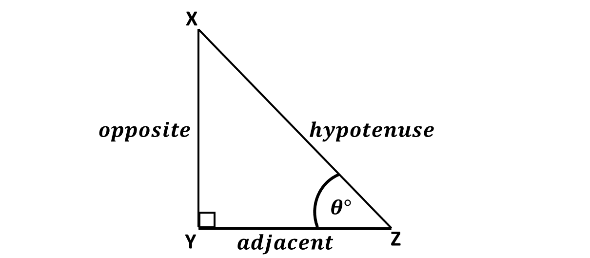
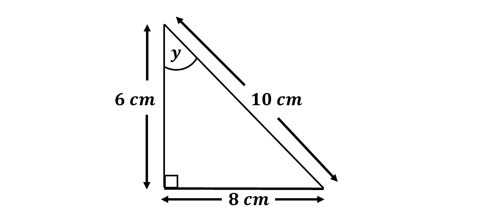
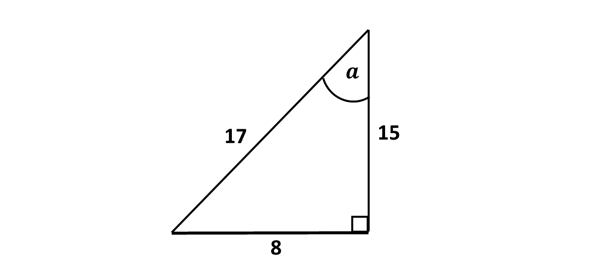
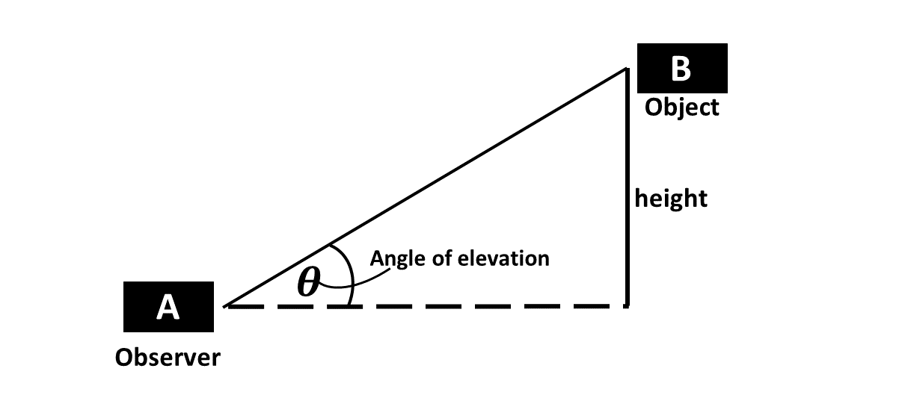
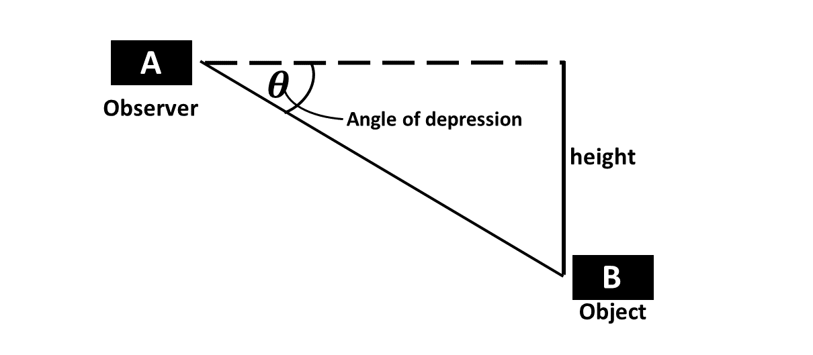
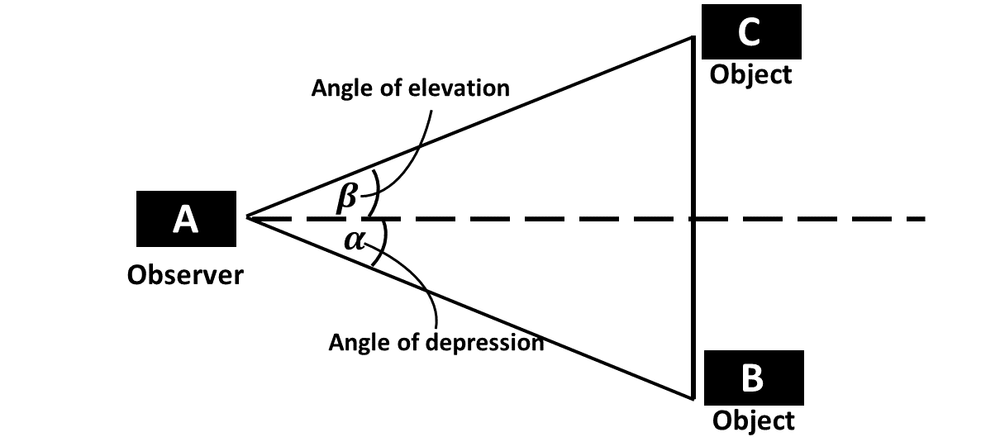

In our lesson on the relationship between the hypotenuse and the other two sides of a right-angled triangled triangle, we learnt that, given any right-angled triangle, the square of the hypotenuse is equal to the sum of the square of the other two sides.
That is, if the length of the hypotenuse is '\(c\)' and the length of the other two sides '\(a\)' and '\(b\)', then the Pythagorean Theorem states that: \[c^2 = a^2 + b^2\]
In this lesson, we will learn about the basic trigonometric ratios, which are ratios of any two sides of the three sides of the right-angled triangle, given any of the other two angles in the right-angled triangle.
These ratios are the constants below:
-
Sine
-
Cosine
-
Tangent.
When an angle is given, say \(\theta\) (theta), we will refer to the leg of the triangle facing the angle as the opposite, and the other leg as the adjacent.
These are shown in the diagram below:

Let's learn about these trignometric ratios below.
In a right angled triangle, when an angle \(\theta\) is given, the sine of the angle is the ratio of the opposite side and the hypotenuse.
Mathematically, we say,
sine of \(\theta = \frac{opposite}{hypotenuse}\)
That is, \[sin \ \theta = \frac{opp.}{hyp.}\]
Using their first letters, 'S' for sine, 'O' for opposite and 'H' for hypotenuse, we jovially refer to the equation above as (SOH).
Example 1
From the diagram below, find \(sin \ x\)

Solution
Example 2
Find the sine of the angle marked \(y\) in the diagram below;
Solution
Example 3
Find \(sin \ \theta\) if the opposite side of a triangle is 3 cm and the hypotenuse is 5 cm.
Solution
Example 4
Find the sine of the angle marked \(a\) in the diagram below.
Solution
Example 5
In a triangle, the opposite side is 5 cm and the hypotenuse is 13 cm. Find \(sin \ θ\).
Solution
Solve the following:
-
In a right-angled triangle, the opposite side is 5 cm, and the hypotenuse is 13 cm. Find sin θ.
-
A triangle has an opposite side of 7 m and a hypotenuse of 25 m. Find sin θ.
-
The hypotenuse of a right-angled triangle is 10 units, and the opposite side is 6 units. Find sin θ.
-
In a triangle, the hypotenuse is 17 cm, and the opposite side is 8 cm. Find sin θ.
-
A ladder leans against a wall, reaching a height of 12 m. If the length of the ladder is 15 m, find sin θ.
In a right angled triangle, when an angle \(\theta\) is given, the cosine of the angle is the ratio of the adjacent side and the hypotenuse.
Mathematically, we say,
cosine of \(\theta = \frac{adjacent}{hypotenuse}\)
That is, \[cos \ \theta = \frac{adj.}{hyp.}\]
Using their first letters, 'C' for cosine, 'A' for adjacent and 'H' for hypotenuse, we jovially refer to the equation above as (CAH).
Example 6
From the diagram below, find \(cos \ x\)
Solution
Example 7
Find the cosine of the angle marked \(y\) in the diagram below;
Solution
Example 8
Find the cosine of the angle marked \(a\) in the diagram below.
Solution
Example 9
Find \(cos \ θ\) if the adjacent side is 4 cm and the hypotenuse is 5 cm.
Solution
Example 10
In a triangle, the adjacent side is 8 cm and the hypotenuse is 17 cm. Find \(cos \ θ\).
Solution
Solve the following:
-
In a right-angled triangle, the adjacent side is 12 cm, and the hypotenuse is 13 cm. Find cos\(\theta\).
-
The hypotenuse of a right-angled triangle is 25 m, and the adjacent side is 24 m. Find cos\(\theta\).
-
A triangle has an adjacent side of 9 units and a hypotenuse of 15 units. Find cos\(\theta\).
-
In a triangle, the adjacent side is 5 cm, and the hypotenuse is 13 cm. Find cos\(\theta\).
-
A ramp 20 m long has its base 16 m from the wall. Find cos\(\theta\).
In a right angled triangle, when an angle \(\theta\) is given, the tangent of the angle is the ratio of the opposite side and the adjacent.
Mathematically, we say,
tangent of \(\theta = \frac{opposite}{adjacent}\)
That is, \[tan \ \theta = \frac{opp}{adj}\]
Using their first letters, 'T' for tangent, 'A' for adjacent and 'O' for opposite, we jovially refer to the equation above as (TOA).
Example 11
From the diagram below, find \(tan \ x\)
Solution
Example 12
[BECE 1991]
Find the tangent of the angle marked \(y\) in the diagram below;
Solution
Example 13
Find the tangent of the angle marked \(a\) in the diagram below.
Solution
Example 14
Find \(tan \ θ\) if the opposite side is 6 cm and the adjacent side is 8 cm.
Solution
Example 15
In a triangle, the opposite side is 9 cm and the adjacent side is 12 cm. Find \(tan \ θ\).
Solution
Solve the following:
-
In a right-angled triangle, the opposite side is 6 cm, and the adjacent side is 8 cm. Find tan\(\theta\).
-
A triangle has an opposite side of 9 m and an adjacent side of 12 m. Find tan\(\theta\).
-
The opposite side of a right-angled triangle is 5 units, and the adjacent side is 4 units. Find tan\(\theta\).
-
In a triangle, the opposite side is 15 cm, and the adjacent side is 20 cm. Find tan\(\theta\).
-
A person standing 10 m from a wall observes the top of a ladder that reaches a height of 15 m. Find tan\(\theta\).
In summary, we have SOH which implies sine of \(\theta\);
\(\Rightarrow sin \ \theta = \frac{opp}{hyp}\)
we also have CAH which implies cosine of \(\theta\);
\(\Rightarrow cos \ \theta = \frac{adj}{hyp}\)
then we have TOA which implies tangent of \(\theta\);
\(\Rightarrow tan \ \theta = \frac{opp}{adj}\)
From the relations above, it can be proved that \[tan \ \theta = \frac{sin \ \theta}{cos \ \theta}\]
In trigonometry, we have special angles which are angles that have well-known and easily calculable trigonometric values. These angles are as follows,
a. \(0^\circ\)
b. \(30^\circ\)
c. \(45^\circ\)
d. \(60^\circ\)
e. \(90^\circ\)
Knowing the sine, cosine and tangent ratios for the above mentioned angles could prove helpful while performing calculations.
Find the trigonometric ratios of the special angles in the table below:
| θ (Angle) | sin θ | cos θ | tan θ |
|---|---|---|---|
| 0° | 0 | 1 | 0 |
| 30° | \(\frac{1}{2}\) | \(\frac{\sqrt{3}}{2}\) | \(\frac{\sqrt{3}}{3}\) |
| 45° | \(\frac{\sqrt{2}}{2}\) | \(\frac{\sqrt{2}}{2}\) | 1 |
| 60° | \(\frac{\sqrt{3}}{2}\) | \(\frac{1}{2}\) | \(\sqrt{3}\) |
| 90° | 1 | 0 | Undefined |
The angle of elevation is the angle formed between the horizontal line of sight and the line of sight to an object above the observer.
It can be described as the angle formed when someone is looking upward. Consider the diagram below:
The observer standing at point A, and observing an object at point B has his sight making an angle of elevation, \(\theta^\circ\), with the horizontal.
Real life examples are;
-
A person looking at an aeroplane or a bird flying in the sky.
-
A surveyor using an instrument to measure the angle of elevation to the top of a building to determine its height.
-
A ship captain measuring the angle of elevation to a lighthouse to determine the ship's distance from the shore.
-
Observers using the angle of elevation to determine the position of stars or planets in the sky.
-
Engineers calculate the angle of elevation to ensure the stability of inclined structures like ramps and bridges.
The angle of depression is the angle formed between the horizontal line of sight and the line of sight to an object below the observer.
It can be described as the angle formed when someone is looking downward from a height above the ground. Consider the diagram below:
The observer standing at point A, and observing an object at point B has his sight making an angle of depression, \(\theta^\circ\), with the horizontal.
Real life examples are;
-
Pilots calculate the angle of depression to determine the distance to a landing strip or to locate another aircraft below.
-
A security camera mounted high on a wall uses the angle of depression to monitor activity below.
-
Rock climbers use it to evaluate the distance to the ground or a specific point below.
-
A lifeguard in a tower uses the angle of depression to spot swimmers who need help.
-
A teacher standing on the third floor of a building looking at students playing on the school playing field.
In summary, the diagram below describes a single observer observing two objects, one at the top (angle of elevation) and one at the bottom, (angle of depression).
Consider the diagram below:
Example 16
From a point on the ground, the angle of elevation to the top of a building is 30\(^\circ\). If the building is 20 m tall, find the distance from the point to the base of the building.
Solution
Example 17
From the top of a lighthouse 30 m high, the angle of depression to a boat is 45\(^\circ\). Find the horizontal distance between the lighthouse and the boat.
Solution
Example 18
A ladder leaning against a wall forms an angle of 45\(^\circ\) with the ground. If the ladder is 10 m long, how high does it reach on the wall?
Solution
Example 19
A person standing on a hill 100 m high observes a car at an angle of depression of \(30^\circ\). Find the horizontal distance to the car.
Solution
Example 20
A person observes a bird at an angle of elevation of 60\(^\circ\). If the person is 50 m away horizontally from the point directly below the bird, how high is the bird?
Solution
Solve the following:
-
The angle of elevation to the top of a tower is 45\(^\circ\) from a point 40 m away from its base. Find the height of the tower.
-
From the top of a 50 m tall building, the angle of depression to a point on the ground is 60\(^\circ\). Find the horizontal distance to the point.
-
A tree casts a shadow of 15 m when the sun's angle of elevation is 30\(^\circ\). Find the height of the tree.
-
A pilot flying at an altitude of 500 m observes an airport at an angle of depression of 30\(^\circ\). Find the horizontal distance to the airport.
-
A building is 50 m tall. From a point on the ground, the angle of elevation to its top is 15\(^\circ\). Find the horizontal distance from the point to the building.
-
From a tower 120 m high, the angle of depression to a car on the ground is 60\(^\circ\). Find the horizontal distance to the car.
-
A drone hovers at a height of 100 m. The angle of elevation from a person on the ground to the drone is 30\(^\circ\). Find the horizontal distance between the person and the drone.
-
A person on top of a cliff observes a boat at an angle of depression of 60\(^\circ\). If the cliff is 200 m high, find the horizontal distance to the boat.
-
From a point 25 m away from a flagpole, the angle of elevation to its top is 45\(^\circ\). Find the height of the flagpole.
-
The angle of depression from the top of a building to a person standing 80 m away is 30\(^\circ\). Find the height of the building.
Test yourself on what you have learnt so far. Click on the link below when you are ready.
Kindly contact the administrator on 0208711375 for the link to the test.
For sponsorship or advertisement kindly call or whatsapp on 0208711375 or 0249969740.